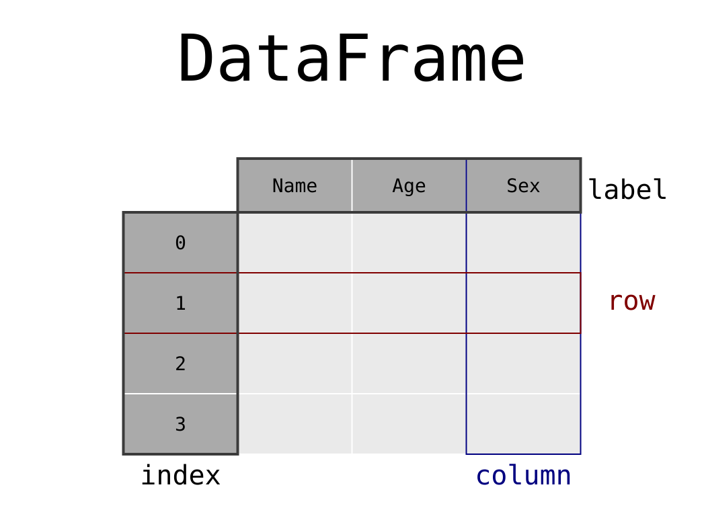
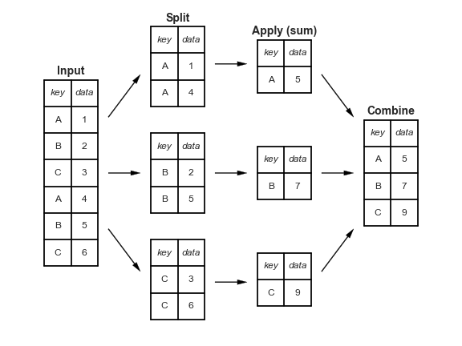
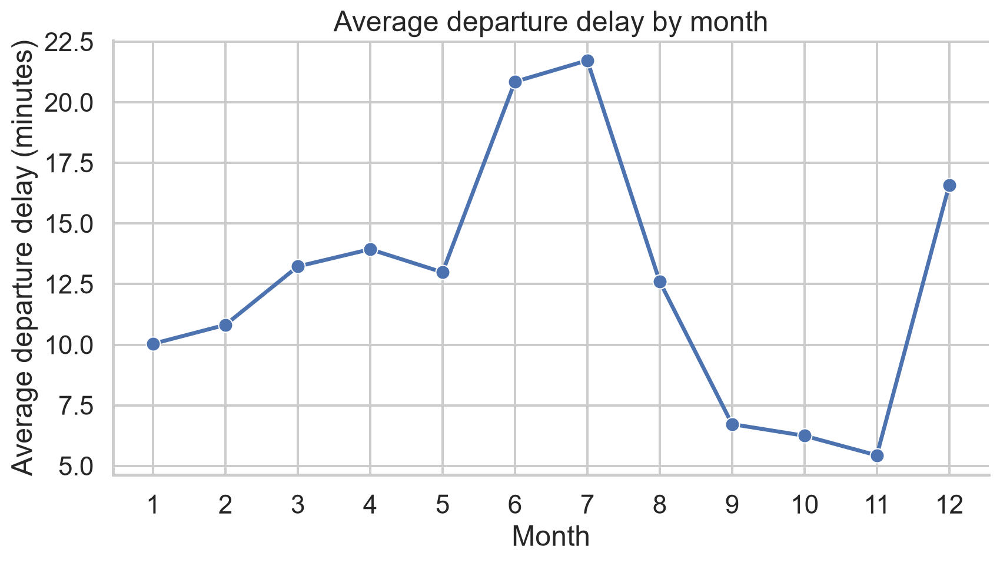
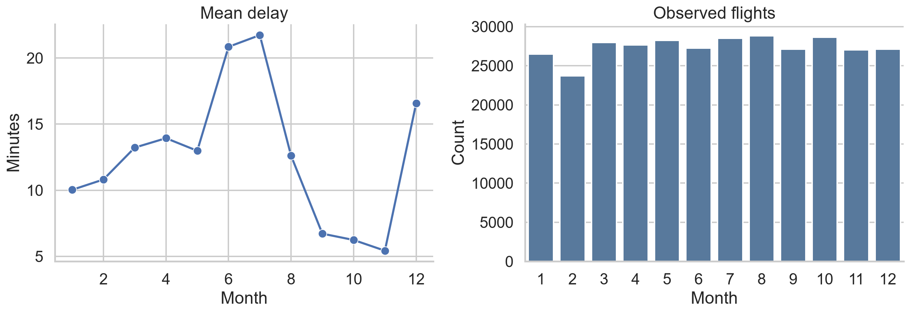

show code
| col0 | col1 | col2 | col3 | col4 | |
|---|---|---|---|---|---|
| row0 | 0 | 0 | 0 | a | alpha |
| row1 | 0 | 0 | 0 | b | gamma |
| row2 | 0 | 0 | 0 | b | gamma |
| row3 | 0 | 0 | 0 | a | gamma |
Data Analytics Foundations
By the end of the module, students will be able to:
Data rarely arrive in exactly the form required for analysis.
A typical analytical workflow requires us to:

DataFrame
| col0 | col1 | col2 | col3 | col4 | |
|---|---|---|---|---|---|
| row0 | 0 | 0 | 0 | a | alpha |
| row1 | 0 | 0 | 0 | b | gamma |
| row2 | 0 | 0 | 0 | b | gamma |
| row3 | 0 | 0 | 0 | a | gamma |
| year | month | day | dep_time | sched_dep_time | dep_delay | ... | dest | air_time | distance | hour | minute | time_hour | |
|---|---|---|---|---|---|---|---|---|---|---|---|---|---|
| 0 | 2013 | 1 | 1 | 517.0 | 515 | 2.0 | ... | IAH | 227.0 | 1400 | 5 | 15 | 2013-01-01T10:00:00Z |
| 1 | 2013 | 1 | 1 | 533.0 | 529 | 4.0 | ... | IAH | 227.0 | 1416 | 5 | 29 | 2013-01-01T10:00:00Z |
| 2 | 2013 | 1 | 1 | 542.0 | 540 | 2.0 | ... | MIA | 160.0 | 1089 | 5 | 40 | 2013-01-01T10:00:00Z |
| 3 | 2013 | 1 | 1 | 544.0 | 545 | -1.0 | ... | BQN | 183.0 | 1576 | 5 | 45 | 2013-01-01T10:00:00Z |
| 4 | 2013 | 1 | 1 | 554.0 | 600 | -6.0 | ... | ATL | 116.0 | 762 | 6 | 0 | 2013-01-01T11:00:00Z |
5 rows × 19 columns
<class 'pandas.DataFrame'>
RangeIndex: 336776 entries, 0 to 336775
Data columns (total 19 columns):
# Column Non-Null Count Dtype
--- ------ -------------- -----
0 year 336776 non-null int64
1 month 336776 non-null int64
2 day 336776 non-null int64
3 dep_time 328521 non-null float64
4 sched_dep_time 336776 non-null int64
5 dep_delay 328521 non-null float64
6 arr_time 328063 non-null float64
7 sched_arr_time 336776 non-null int64
8 arr_delay 327346 non-null float64
9 carrier 336776 non-null str
10 flight 336776 non-null int64
11 tailnum 334264 non-null str
12 origin 336776 non-null str
13 dest 336776 non-null str
14 air_time 327346 non-null float64
15 distance 336776 non-null int64
16 hour 336776 non-null int64
17 minute 336776 non-null int64
18 time_hour 336776 non-null str
dtypes: float64(5), int64(9), str(5)
memory usage: 48.8 MB| dtype | Analytical meaning | Typical operations |
|---|---|---|
int64 |
integers | arithmetic, counts |
float64 |
real numbers | arithmetic, statistics |
bool |
logical values | filters, flags |
string |
text | matching, cleaning |
category |
repeated labels | grouping, ordering |
datetime64 |
date and time | lags, intervals, resampling |
object |
generic or unresolved | inspect and convert |
0 2013-01-01T10:00:00Z
1 2013-01-01T10:00:00Z
2 2013-01-01T10:00:00Z
3 2013-01-01T10:00:00Z
4 2013-01-01T11:00:00Z
Name: time_hour, dtype: str| col0 | col1 | col2 | col3 | col4 | col5 | col6 | |
|---|---|---|---|---|---|---|---|
| a | 0.0 | 1.0 | 2.0 | 3.0 | 4.0 | 5.0 | apple |
| b | 6.0 | 7.0 | 8.0 | 9.0 | 10.0 | 11.0 | orange |
| c | 12.0 | 13.0 | 14.0 | 15.0 | 16.0 | 17.0 | pineapple |
| d | 18.0 | 19.0 | 20.0 | 21.0 | 22.0 | 23.0 | mango |
| e | 24.0 | 25.0 | 26.0 | 27.0 | 28.0 | 29.0 | kiwi |
| f | 30.0 | 31.0 | 32.0 | 33.0 | 34.0 | 35.0 | lemon |
.loc| col0 | col1 | col2 | col3 | col4 | col5 | col6 | |
|---|---|---|---|---|---|---|---|
| a | 0.0 | 1.0 | 2.0 | 3.0 | 4.0 | 5.0 | apple |
| b | 6.0 | 7.0 | 8.0 | 9.0 | 10.0 | 11.0 | orange |
General pattern:
.iloccol0 0.0
col1 1.0
col2 2.0
col3 3.0
col4 4.0
col5 5.0
col6 apple
Name: a, dtype: object| col0 | col1 | col2 | col3 | col4 | col5 | col6 | |
|---|---|---|---|---|---|---|---|
| a | 0.0 | 1.0 | 2.0 | 3.0 | 4.0 | 5.0 | apple |
| c | 12.0 | 13.0 | 14.0 | 15.0 | 16.0 | 17.0 | pineapple |
General pattern:
query()| col0 | col1 | col2 | col3 | col4 | col5 | col6 | |
|---|---|---|---|---|---|---|---|
| c | 12.0 | 13.0 | 14.0 | 15.0 | 16.0 | 17.0 | pineapple |
| e | 24.0 | 25.0 | 26.0 | 27.0 | 28.0 | 29.0 | kiwi |
| col0 | col1 | col2 | col3 | col4 | col5 | col6 | |
|---|---|---|---|---|---|---|---|
| c | 12.0 | 13.0 | 14.0 | 15.0 | 16.0 | 17.0 | pineapple |
| d | 18.0 | 19.0 | 20.0 | 21.0 | 22.0 | 23.0 | mango |
| e | 24.0 | 25.0 | 26.0 | 27.0 | 28.0 | 29.0 | kiwi |
| f | 30.0 | 31.0 | 32.0 | 33.0 | 34.0 | 35.0 | lemon |
Supported comparisons include >, >=, <, <=, ==, and !=.
| year | month | day | dep_time | sched_dep_time | dep_delay | ... | dest | air_time | distance | hour | minute | time_hour | |
|---|---|---|---|---|---|---|---|---|---|---|---|---|---|
| 0 | 2013 | 1 | 1 | 517.0 | 515 | 2.0 | ... | IAH | 227.0 | 1400 | 5 | 15 | 2013-01-01 10:00:00 |
| 1 | 2013 | 1 | 1 | 533.0 | 529 | 4.0 | ... | IAH | 227.0 | 1416 | 5 | 29 | 2013-01-01 10:00:00 |
| 2 | 2013 | 1 | 1 | 542.0 | 540 | 2.0 | ... | MIA | 160.0 | 1089 | 5 | 40 | 2013-01-01 10:00:00 |
| 3 | 2013 | 1 | 1 | 544.0 | 545 | -1.0 | ... | BQN | 183.0 | 1576 | 5 | 45 | 2013-01-01 10:00:00 |
| 4 | 2013 | 1 | 1 | 554.0 | 600 | -6.0 | ... | ATL | 116.0 | 762 | 6 | 0 | 2013-01-01 11:00:00 |
5 rows × 19 columns
Equivalent Boolean indexing:
| year | month | day | dep_time | sched_dep_time | dep_delay | ... | dest | air_time | distance | hour | minute | time_hour | |
|---|---|---|---|---|---|---|---|---|---|---|---|---|---|
| 0 | 2013 | 1 | 1 | 517.0 | 515 | 2.0 | ... | IAH | 227.0 | 1400 | 5 | 15 | 2013-01-01 10:00:00 |
| 1 | 2013 | 1 | 1 | 533.0 | 529 | 4.0 | ... | IAH | 227.0 | 1416 | 5 | 29 | 2013-01-01 10:00:00 |
| 2 | 2013 | 1 | 1 | 542.0 | 540 | 2.0 | ... | MIA | 160.0 | 1089 | 5 | 40 | 2013-01-01 10:00:00 |
| 3 | 2013 | 1 | 1 | 544.0 | 545 | -1.0 | ... | BQN | 183.0 | 1576 | 5 | 45 | 2013-01-01 10:00:00 |
| 4 | 2013 | 1 | 1 | 554.0 | 600 | -6.0 | ... | ATL | 116.0 | 762 | 6 | 0 | 2013-01-01 11:00:00 |
5 rows × 19 columns
| year | month | day | dep_time | sched_dep_time | dep_delay | ... | dest | air_time | distance | hour | minute | time_hour | |
|---|---|---|---|---|---|---|---|---|---|---|---|---|---|
| 0 | 2013 | 1 | 1 | 517.0 | 515 | 2.0 | ... | IAH | 227.0 | 1400 | 5 | 15 | 2013-01-01 10:00:00 |
| 1 | 2013 | 1 | 1 | 533.0 | 529 | 4.0 | ... | IAH | 227.0 | 1416 | 5 | 29 | 2013-01-01 10:00:00 |
| 2 | 2013 | 1 | 1 | 542.0 | 540 | 2.0 | ... | MIA | 160.0 | 1089 | 5 | 40 | 2013-01-01 10:00:00 |
| 3 | 2013 | 1 | 1 | 544.0 | 545 | -1.0 | ... | BQN | 183.0 | 1576 | 5 | 45 | 2013-01-01 10:00:00 |
| 4 | 2013 | 1 | 1 | 554.0 | 600 | -6.0 | ... | ATL | 116.0 | 762 | 6 | 0 | 2013-01-01 11:00:00 |
5 rows × 19 columns
| year | month | day | dep_time | sched_dep_time | dep_delay | ... | dest | air_time | distance | hour | minute | time_hour | |
|---|---|---|---|---|---|---|---|---|---|---|---|---|---|
| 7072 | 2013 | 1 | 9 | 641.0 | 900 | 1301.0 | ... | HNL | 640.0 | 4983 | 9 | 0 | 2013-01-09 14:00:00 |
| 235778 | 2013 | 6 | 15 | 1432.0 | 1935 | 1137.0 | ... | CMH | 74.0 | 483 | 19 | 35 | 2013-06-15 23:00:00 |
| 8239 | 2013 | 1 | 10 | 1121.0 | 1635 | 1126.0 | ... | ORD | 111.0 | 719 | 16 | 35 | 2013-01-10 21:00:00 |
| 327043 | 2013 | 9 | 20 | 1139.0 | 1845 | 1014.0 | ... | SFO | 354.0 | 2586 | 18 | 45 | 2013-09-20 22:00:00 |
| 270376 | 2013 | 7 | 22 | 845.0 | 1600 | 1005.0 | ... | CVG | 96.0 | 589 | 16 | 0 | 2013-07-22 20:00:00 |
5 rows × 19 columns
| year | month | day | dep_time | sched_dep_time | dep_delay | ... | dest | air_time | distance | hour | minute | time_hour | |
|---|---|---|---|---|---|---|---|---|---|---|---|---|---|
| 55985 | 2013 | 11 | 1 | 658.0 | 700 | -2.0 | ... | LAX | 336.0 | 2475 | 7 | 0 | 2013-11-01 11:00:00 |
| 181270 | 2013 | 4 | 18 | 558.0 | 600 | -2.0 | ... | DFW | 234.0 | 1389 | 6 | 0 | 2013-04-18 10:00:00 |
| 256340 | 2013 | 7 | 7 | 1659.0 | 1700 | -1.0 | ... | DCA | 64.0 | 214 | 17 | 0 | 2013-07-07 21:00:00 |
3 rows × 19 columns
# Filter first, then sort a smaller table
result_a = (
flights
.query("dest == 'IAH'")
.sort_values("arr_delay", ascending=False)
)
# Sort everything, then filter
result_b = (
flights
.sort_values("arr_delay", ascending=False)
.query("dest == 'IAH'")
)
result_a[["flight", "dest", "arr_delay"]].head().equals(
result_b[["flight", "dest", "arr_delay"]].head()
)True| col0 | col1 | col2 | col3 | col4 | col5 | col6 | new_column0 | |
|---|---|---|---|---|---|---|---|---|
| a | 0.0 | 1.0 | 2.0 | 3.0 | 4.0 | 5.0 | apple | 5 |
| b | 6.0 | 7.0 | 8.0 | 9.0 | 10.0 | 11.0 | orange | 5 |
| c | 12.0 | 13.0 | 14.0 | 15.0 | 16.0 | 17.0 | pineapple | 5 |
| d | 18.0 | 19.0 | 20.0 | 21.0 | 22.0 | 23.0 | mango | 5 |
| e | 24.0 | 25.0 | 26.0 | 27.0 | 28.0 | 29.0 | kiwi | 5 |
| col0 | col1 | col2 | col3 | col4 | col5 | col6 | new_column0 | |
|---|---|---|---|---|---|---|---|---|
| a | 0.0 | 1.0 | 2.0 | 3.0 | 4.0 | 5.0 | apple | 0 |
| b | 6.0 | 7.0 | 8.0 | 9.0 | 10.0 | 11.0 | orange | 1 |
| c | 12.0 | 13.0 | 14.0 | 15.0 | 16.0 | 17.0 | pineapple | 2 |
| d | 18.0 | 19.0 | 20.0 | 21.0 | 22.0 | 23.0 | mango | 3 |
| e | 24.0 | 25.0 | 26.0 | 27.0 | 28.0 | 29.0 | kiwi | 4 |
| col0 | new_column0 | new_column3 | |
|---|---|---|---|
| a | 0.0 | 0 | 0.0 |
| b | 6.0 | 1 | 5.0 |
| c | 12.0 | 2 | 10.0 |
| d | 18.0 | 3 | 15.0 |
| e | 24.0 | 4 | 20.0 |
| f | 30.0 | 5 | 25.0 |
Vectorized operations apply to complete columns rather than explicit row-by-row loops.
| dep_delay | arr_delay | gain | speed | |
|---|---|---|---|---|
| 0 | 2.0 | 11.0 | -9.0 | 370.044053 |
| 1 | 4.0 | 20.0 | -16.0 | 374.273128 |
| 2 | 2.0 | 33.0 | -31.0 | 408.375000 |
| 3 | -1.0 | -18.0 | 17.0 | 516.721311 |
| 4 | -6.0 | -25.0 | 19.0 | 394.137931 |
| col0 | new_column0 | col2 | |
|---|---|---|---|
| a | 0.0 | 0 | 2.0 |
| b | 6.0 | 1 | 8.0 |
| c | 12.0 | 2 | 14.0 |
| d | 18.0 | 3 | 20.0 |
| e | 24.0 | 4 | 26.0 |
Series;DataFrame.| col0 | new_column0 | col2 | |
|---|---|---|---|
| a | 0.0 | 0 | 2.0 |
| b | 6.0 | 1 | 8.0 |
| year | month | day | sched_dep_time | sched_arr_time | flight | distance | hour | minute | |
|---|---|---|---|---|---|---|---|---|---|
| 0 | 2013 | 1 | 1 | 515 | 819 | 1545 | 1400 | 5 | 15 |
| 1 | 2013 | 1 | 1 | 529 | 830 | 1714 | 1416 | 5 | 29 |
| 2 | 2013 | 1 | 1 | 540 | 850 | 1141 | 1089 | 5 | 40 |
| 3 | 2013 | 1 | 1 | 545 | 1022 | 725 | 1576 | 5 | 45 |
| 4 | 2013 | 1 | 1 | 600 | 837 | 461 | 762 | 6 | 0 |
| new_column0 | new_column3 | |
|---|---|---|
| a | 0 | 0.0 |
| b | 1 | 5.0 |
| c | 2 | 10.0 |
| d | 3 | 15.0 |
| e | 4 | 20.0 |
Other useful string methods include:
| col0 | col1 | col2 | letters | names | col5 | fruit | new_column0 | new_column3 | |
|---|---|---|---|---|---|---|---|---|---|
| a | 0.0 | 1.0 | 2.0 | 3.0 | 4.0 | 5.0 | apple | 0 | 0.0 |
| b | 6.0 | 7.0 | 8.0 | 9.0 | 10.0 | 11.0 | orange | 1 | 5.0 |
| c | 12.0 | 13.0 | 14.0 | 15.0 | 16.0 | 17.0 | pineapple | 2 | 10.0 |
| d | 18.0 | 19.0 | 20.0 | 21.0 | 22.0 | 23.0 | mango | 3 | 15.0 |
| e | 24.0 | 25.0 | 26.0 | 27.0 | 28.0 | 29.0 | kiwi | 4 | 20.0 |
| col5 | col3 | col1 | col4 | col2 | col0 | col6 | |
|---|---|---|---|---|---|---|---|
| a | 5.0 | 3.0 | 1.0 | 4.0 | 2.0 | 0.0 | apple |
| b | 11.0 | 9.0 | 7.0 | 10.0 | 8.0 | 6.0 | orange |
| c | 17.0 | 15.0 | 13.0 | 16.0 | 14.0 | 12.0 | pineapple |
| d | 23.0 | 21.0 | 19.0 | 22.0 | 20.0 | 18.0 | mango |
| e | 29.0 | 27.0 | 25.0 | 28.0 | 26.0 | 24.0 | kiwi |
| col0 | col1 | col2 | col3 | col4 | col5 | col6 | new_column0 | new_column3 | |
|---|---|---|---|---|---|---|---|---|---|
| a | 0.0 | 1.0 | 2.0 | 3.0 | 4.0 | 5.0 | apple | 0 | 0.0 |
| b | 6.0 | 7.0 | 8.0 | 9.0 | 10.0 | 11.0 | orange | 1 | 5.0 |
| c | 12.0 | 13.0 | 14.0 | 15.0 | 16.0 | 17.0 | pineapple | 2 | 10.0 |
| d | 18.0 | 19.0 | 20.0 | 21.0 | 22.0 | 23.0 | mango | 3 | 15.0 |
| e | 24.0 | 25.0 | 26.0 | 27.0 | 28.0 | 29.0 | kiwi | 4 | 20.0 |
Remember:
.loc refers to labels;.iloc refers to positions;: means all entries along an axis.
| dep_delay | |
|---|---|
| month | |
| 1 | 10.036665 |
| 2 | 10.816843 |
| 3 | 13.227076 |
| 4 | 13.938038 |
| 5 | 12.986859 |
| 6 | 20.846332 |
| 7 | 21.727787 |
| 8 | 12.611040 |
| 9 | 6.722476 |
| 10 | 6.243988 |
| 11 | 5.435362 |
| 12 | 16.576688 |
The output has one row per month, so the analytical granularity has changed.
.agg()| dep_delay | |
|---|---|
| month | |
| 1 | 10.036665 |
| 2 | 10.816843 |
| 3 | 13.227076 |
| 4 | 13.938038 |
| 5 | 12.986859 |
| 6 | 20.846332 |
| 7 | 21.727787 |
| 8 | 12.611040 |
| 9 | 6.722476 |
| 10 | 6.243988 |
| 11 | 5.435362 |
| 12 | 16.576688 |
Common aggregations include:
count, size, first, last, mean, median, min, max, std, var, and sum.
| mean_delay | count_flights | |
|---|---|---|
| month | ||
| 1 | 10.036665 | 26483 |
| 2 | 10.816843 | 23690 |
| 3 | 13.227076 | 27973 |
| 4 | 13.938038 | 27662 |
| 5 | 12.986859 | 28233 |
| 6 | 20.846332 | 27234 |
| 7 | 21.727787 | 28485 |
| 8 | 12.611040 | 28841 |
| 9 | 6.722476 | 27122 |
| 10 | 6.243988 | 28653 |
| 11 | 5.435362 | 27035 |
| 12 | 16.576688 | 27110 |
count() versus size()| non_missing_delays | total_rows | missing_delays | |
|---|---|---|---|
| month | |||
| 1 | 26483 | 27004 | 521 |
| 2 | 23690 | 24951 | 1261 |
| 3 | 27973 | 28834 | 861 |
| 4 | 27662 | 28330 | 668 |
| 5 | 28233 | 28796 | 563 |
| 6 | 27234 | 28243 | 1009 |
| 7 | 28485 | 29425 | 940 |
| 8 | 28841 | 29327 | 486 |
| 9 | 27122 | 27574 | 452 |
| 10 | 28653 | 28889 | 236 |
| 11 | 27035 | 27268 | 233 |
| 12 | 27110 | 28135 | 1025 |
| mean_delay | count_flights | ||
|---|---|---|---|
| month | year | ||
| 1 | 2013 | 10.036665 | 26483 |
| 2 | 2013 | 10.816843 | 23690 |
| 3 | 2013 | 13.227076 | 27973 |
| 4 | 2013 | 13.938038 | 27662 |
| 5 | 2013 | 12.986859 | 28233 |
| 6 | 2013 | 20.846332 | 27234 |
| 7 | 2013 | 21.727787 | 28485 |
| 8 | 2013 | 12.611040 | 28841 |
| 9 | 2013 | 6.722476 | 27122 |
| 10 | 2013 | 6.243988 | 28653 |
| 11 | 2013 | 5.435362 | 27035 |
| 12 | 2013 | 16.576688 | 27110 |
| month | year | mean_delay | count_flights | |
|---|---|---|---|---|
| 0 | 1 | 2013 | 10.036665 | 26483 |
| 1 | 2 | 2013 | 10.816843 | 23690 |
| 2 | 3 | 2013 | 13.227076 | 27973 |
| 3 | 4 | 2013 | 13.938038 | 27662 |
| 4 | 5 | 2013 | 12.986859 | 28233 |
| 5 | 6 | 2013 | 20.846332 | 27234 |
| 6 | 7 | 2013 | 21.727787 | 28485 |
| 7 | 8 | 2013 | 12.611040 | 28841 |
| 8 | 9 | 2013 | 6.722476 | 27122 |
| 9 | 10 | 2013 | 6.243988 | 28653 |
| 10 | 11 | 2013 | 5.435362 | 27035 |
| 11 | 12 | 2013 | 16.576688 | 27110 |
An alternative is to avoid grouped indexes:
| month | year | mean_delay | count_flights | |
|---|---|---|---|---|
| 0 | 1 | 2013 | 10.036665 | 26483 |
| 1 | 2 | 2013 | 10.816843 | 23690 |
| 2 | 3 | 2013 | 13.227076 | 27973 |
| 3 | 4 | 2013 | 13.938038 | 27662 |
| 4 | 5 | 2013 | 12.986859 | 28233 |
| 5 | 6 | 2013 | 20.846332 | 27234 |
| 6 | 7 | 2013 | 21.727787 | 28485 |
| 7 | 8 | 2013 | 12.611040 | 28841 |
| 8 | 9 | 2013 | 6.722476 | 27122 |
| 9 | 10 | 2013 | 6.243988 | 28653 |
| 10 | 11 | 2013 | 5.435362 | 27035 |
| 11 | 12 | 2013 | 16.576688 | 27110 |
.agg().transform()flights_transformed = flights.copy()
flights_transformed["max_delay_month"] = (
flights_transformed
.groupby("month")["arr_delay"]
.transform("max")
)
flights_transformed["delay_frac_of_max"] = (
flights_transformed["arr_delay"]
/ flights_transformed["max_delay_month"]
)
flights_transformed[
["year", "month", "day", "arr_delay", "max_delay_month", "delay_frac_of_max"]
].head()| year | month | day | arr_delay | max_delay_month | delay_frac_of_max | |
|---|---|---|---|---|---|---|
| 0 | 2013 | 1 | 1 | 11.0 | 1272.0 | 0.008648 |
| 1 | 2013 | 1 | 1 | 20.0 | 1272.0 | 0.015723 |
| 2 | 2013 | 1 | 1 | 33.0 | 1272.0 | 0.025943 |
| 3 | 2013 | 1 | 1 | -18.0 | 1272.0 | -0.014151 |
| 4 | 2013 | 1 | 1 | -25.0 | 1272.0 | -0.019654 |
For observation \(i\) in group \(g\):
\[ z_i = \frac{x_i}{\max_{j \in g}(x_j)} \]
The group statistic is repeated and aligned with the original observations.
| month | mean_departure_delay | median_departure_delay | flights_observed | |
|---|---|---|---|---|
| 0 | 1 | 10.036665 | -2.0 | 26483 |
| 1 | 2 | 10.816843 | -2.0 | 23690 |
| 2 | 3 | 13.227076 | -1.0 | 27973 |
| 3 | 4 | 13.938038 | -2.0 | 27662 |
| 4 | 5 | 12.986859 | -1.0 | 28233 |
| 5 | 6 | 20.846332 | 0.0 | 27234 |
| 6 | 7 | 21.727787 | 0.0 | 28485 |
| 7 | 8 | 12.611040 | -1.0 | 28841 |
| 8 | 9 | 6.722476 | -3.0 | 27122 |
| 9 | 10 | 6.243988 | -3.0 | 28653 |
| 10 | 11 | 5.435362 | -3.0 | 27035 |
| 11 | 12 | 16.576688 | 0.0 | 27110 |

fig, axes = plt.subplots(1, 2, figsize=(14, 5))
sns.lineplot(
data=monthly_viz,
x="month",
y="mean_departure_delay",
marker="o",
ax=axes[0],
)
axes[0].set(title="Mean delay", xlabel="Month", ylabel="Minutes")
sns.barplot(
data=monthly_viz,
x="month",
y="flights_observed",
color="#4C78A8",
ax=axes[1],
)
axes[1].set(title="Observed flights", xlabel="Month", ylabel="Count")
sns.despine()
plt.tight_layout()
plt.show()
monthly_summary = (
flights
.assign(
gain=lambda df_: df_["dep_delay"] - df_["arr_delay"],
speed=lambda df_: df_["distance"] / df_["air_time"] * 60,
)
.dropna(subset=["dep_delay", "arr_delay"])
.groupby(["year", "month"], as_index=False)
.agg(
total_flights=("flight", "size"),
mean_departure_delay=("dep_delay", "mean"),
median_arrival_delay=("arr_delay", "median"),
mean_gain=("gain", "mean"),
mean_speed=("speed", "mean"),
)
.sort_values(["year", "month"])
)
monthly_summary.head()| year | month | total_flights | mean_departure_delay | median_arrival_delay | mean_gain | mean_speed | |
|---|---|---|---|---|---|---|---|
| 0 | 2013 | 1 | 26398 | 9.985491 | -3.0 | 3.855519 | 370.496147 |
| 1 | 2013 | 2 | 23611 | 10.760239 | -3.0 | 5.147220 | 375.237848 |
| 2 | 2013 | 3 | 27902 | 13.164289 | -6.0 | 7.356713 | 389.804935 |
| 3 | 2013 | 4 | 27564 | 13.849187 | -2.0 | 2.673124 | 389.052729 |
| 4 | 2013 | 5 | 28128 | 12.891709 | -8.0 | 9.370201 | 406.578037 |
Before visualizing, confirm:
count() or size()?Using flights, find all flights that:
IAH or HOU;arr_time - dep_time not a valid duration calculation?.loc for labels and .iloc for positions..agg() to reduce groups..transform() to preserve original rows.Data Analytics & Visualization